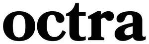

Trade Mark Journal No.2025/040 3 October 2025
UK00004266421 18 September 2025 (3,5)

- Class 3
- Skincare cosmetics; Anti-aging skincare preparations; Anti-aging moisturizers used as cosmetics; Skincare preparations; Moisturisers [cosmetics]; Skin moisturizers used as cosmetics; Anti-aging moisturizers; Anti-ageing moisturiser; Suncare lotions [for cosmetic use]; Cosmetic moisturisers; Anti-ageing creams [for cosmetic use]; Cosmetic products in the form of aerosols for skincare; Moisturising skin lotions [cosmetic]; Beauty serums; Anti-aging creams [for cosmetic use]; Acne cleansers, cosmetic; Facial moisturisers [cosmetic]; Non-medicated skincare preparations; Skin cleansers [cosmetic]; Moisturising skin creams [cosmetic]; Suncare lotions; Beauty serums with anti-ageing properties; Facial creams [cosmetics]; Anti-aging creams; Anti-ageing creams; Anti-ageing serums for cosmetic purposes; Skin moisturisers; Skin care lotions [cosmetic]; After-sun oils [cosmetics]; Skin care cosmetics; Beauty lotions; Skin moisturizer; Skin moisturizers; Skin moisturiser; Skin balms [cosmetic]; After-sun lotions [for cosmetic use]; Beauty care cosmetics; Moisturisers; Skin care creams [cosmetic]; Cosmetic creams for skin care; Skin recovery creams [cosmetics]; Cosmetic creams for the skin; Skin creams [for cosmetic use]; Skin creams [cosmetic]; Sunscreen creams [for cosmetic use]; Facial cleansers [cosmetic]; Anti-wrinkle creams [for cosmetic use]; Cosmetics; Cosmetic nourishing creams; Skin cleansers; Moisturiser; Skin masks [cosmetics]; Moisturizers; Self-tanning preparations [cosmetics]; Cleansing creams [cosmetic]; Skin moisturizer masks; Anti-ageing serum; Hairstyling serums; Cosmetic facial lotions; Facial lotions [cosmetic]; Exfoliants for the care of the skin; Body and facial creams [cosmetics]; Non-medicated skin serums; Exfoliants for the cleansing of the skin; Cosmetic creams and lotions; Skin care oils [cosmetic]; Facial moisturizers; Anti-aging serum for cosmetic use; Beauty creams; Moisturising body lotion [cosmetic]; Skin lotions; Lotions for the skin; Beauty balm creams; Skin fresheners [cosmetics]; Hair care lotions [for cosmetic use]; Sunscreens [for cosmetic use]; Skin cleansing lotion; After-sun milks [cosmetics]; Cosmetic massage creams; Skin toners [cosmetic]; Body creams [cosmetics]; Hair care creams [for cosmetic use]; Skin whitening creams; Creams (Skin whitening -); Sunscreen [for cosmetic use]; Tanning oils [cosmetics]; Cosmetic hair lotions; Sun care lotions [for cosmetic use]; Facial creams [cosmetic]; Facial creams [for cosmetic use]; Skin make-up; Exfoliating creams; Suntan lotion [cosmetics]; After-sun milk [cosmetics]; Skin cleansers [non-medicated]; Hair moisturisers; Skin whitening preparations [cosmetic]; Moisturizing creams; Creams for tanning the skin; Cosmetic products for the shower; Aromatherapy creams; Cosmetics for use in the treatment of wrinkled skin; Creams (Cosmetic -); Cosmetic creams; Skin lotion; Skin cream [for cosmetic use]; Anti-aging cream; Cosmetics for use on the skin; Aromatherapy lotions; Organic cosmetics; Skin hydrators; Night creams [cosmetics]; Skin hydrators for cosmetic purposes; Cleansing lotions; After-sun lotions; Facial gels [cosmetics]; Beauty creams for body care; Anti-wrinkle creams; Hair care serums; Facial cleansers; Cosmetic products in the form of aerosols for skin care; Anti-wrinkle cream [for cosmetic use]; Moisturising creams; Self-tanning preparations [cosmetic]; Cosmetic preparations for skin firming; Exfoliant creams; Colour cosmetics for the skin; Cosmetics for suntanning; Skin creams; Creams for the skin; Moisturising gels [cosmetic]; Dermatological creams [other than medicated]; Hair moisturizers; Moisturizing preparations for the skin; Non-medicated skin lotions.
- Class 5
- Vitamin supplements; Dietary supplements; Nutritional supplements; Probiotic supplements; Herbal supplements; Homeopathic supplements; Chlorella dietary supplements; Flaxseed dietary supplements; Calcium supplements; Anti-oxidant supplements; Colostrum supplements; Protein supplements; Prebiotic supplements; Dietary supplements consisting of vitamins; Lecithin dietary supplements; Food supplements; Mineral dietary supplements; Zinc dietary supplements; Mineral nutritional supplements; Acai powder dietary supplements; Propolis dietary supplements; Liquid dietary supplements; Nutraceuticals for use as a dietary supplement; Dietary and nutritional supplements; Vitamin supplements for animals; Protein dietary supplements; Vitamin and mineral supplements; Linseed dietary supplements; Liquid nutritional supplements; Yeast dietary supplements; Casein dietary supplements; Liquid vitamin supplements; Enzyme dietary supplements; Dietary supplements for animals; Dietary supplements for pets; Anti-oxidant food supplements; Dietary food supplements; Alginate dietary supplements; Albumin dietary supplements; Liquid herbal supplements; Flaxseed oil dietary supplements; Wheat dietary supplements; Vitamin and mineral supplements for pets; Dietary supplements for humans; Dietary supplements for infants; Pollen dietary supplements; Energy gels (dietary supplements); Glucose dietary supplements; Vitamin and mineral food supplements; Protein powder dietary supplements; Dietary supplements in powder form; Mineral dietary supplements for animals; Dietary supplements with a cosmetic effect; Nutritional supplements for veterinary use; Dietary supplements for medical use; Medicated food supplements; Whey protein dietary supplements; Mineral dietary supplements for humans; Food supplements for sportsmen; Nutritional supplements consisting primarily of magnesium; Protein supplements for animals; Dietary supplements consisting primarily of magnesium; Soy protein dietary supplements; Vitamin supplement patches; Health-aid foods supplements containing ginseng; Health food supplements made principally of vitamins; Vitamin preparations in the nature of food supplements; Soy isoflavone dietary supplements; Dietary supplement drinks; Dietary supplements and dietetic preparations; Linseed oil dietary supplements; Nutritional supplements consisting of fungal extracts; Nutritional supplements consisting primarily of calcium; Brewer's yeast dietary supplements; Folic acid dietary supplements; Dietary supplements consisting primarily of calcium; Calcium tablets as a food supplement; Nutritional supplements consisting primarily of zinc; Dietary supplements for controlling cholesterol; Nutritional supplements for livestock feed; Nutritional supplements consisting primarily of iron; Herbal dietary supplements for persons special dietary requirements; Food supplements for veterinary use; Dietary supplements consisting primarily of iron; Dietary supplements and dietetic preparations containing CBD oil; Food supplements for dietetic use; Dietary supplements promoting fitness and endurance; Nutritional supplement energy bars; Multivitamins; Medicated supplements for animal feedstuffs; Dietary supplement drink mixes; Dietary food supplements used for modified fasting; Health food supplements made principally of minerals; Feed supplements for veterinary use; Mineral supplements for feeding livestock; Ganoderma lucidum spore powder dietary supplements; Food supplements for medical purposes; Medicated supplements for foodstuffs for animals; Activated charcoal dietary supplements; Zinc supplement lozenges; Food supplements in liquid form; Fitness and endurance supplements; Food supplements for non-medical purposes; Natural dietary supplements for treating claustrophobia; Wheat germ dietary supplements; Protein supplement shakes; Dietary supplements for pets in the nature of a powdered drink mix; Ground flaxseed fiber for use as a dietary supplement; Vitamin supplements for use in renal dialysis; Royal jelly dietary supplements; Antibiotic food supplements for animals; Pine pollen dietary supplements; Diet capsules; Health food supplements for persons with special dietary requirements; Dietary supplements for humans not for medical purposes; Food supplements consisting of amino acids; Nutritional supplement meal replacement bars for boosting energy; Powdered nutritional supplement drink mix; Dietary supplements for human beings; Fodder supplements for veterinary purposes; Vitamins and vitamin preparations; Health-aid foods supplement containing red ginseng; Preparations for supplementing the body with essential vitamins and microelements; Capsules for medicines; Multi-vitamin preparations; Nutritional supplements made of starch adapted for medical use; Food supplements consisting of trace elements; Powdered nutritional supplement energy drink mix; Powdered fruit-flavored dietary supplement drink mix; Delivery agents in the form of coatings for tablets that facilitate the delivery of nutritional supplements; Preparations of vitamins; Antioxidant pills; Multivitamin preparations; Dietary supplemental drinks.
D28 Innovations Limited